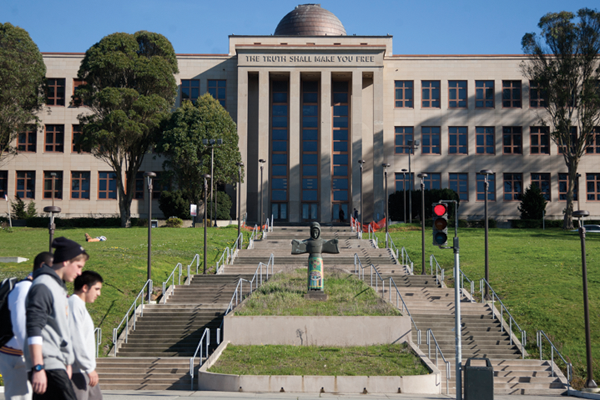
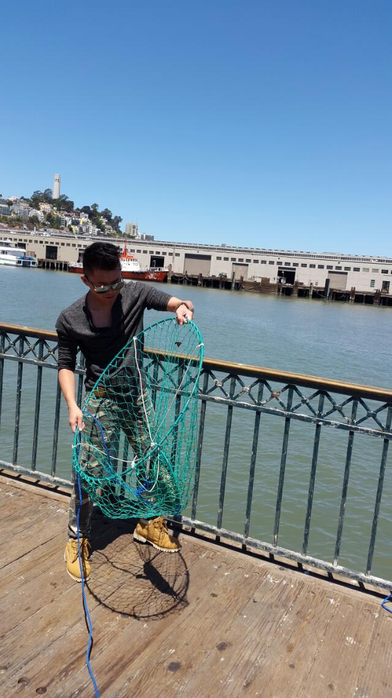
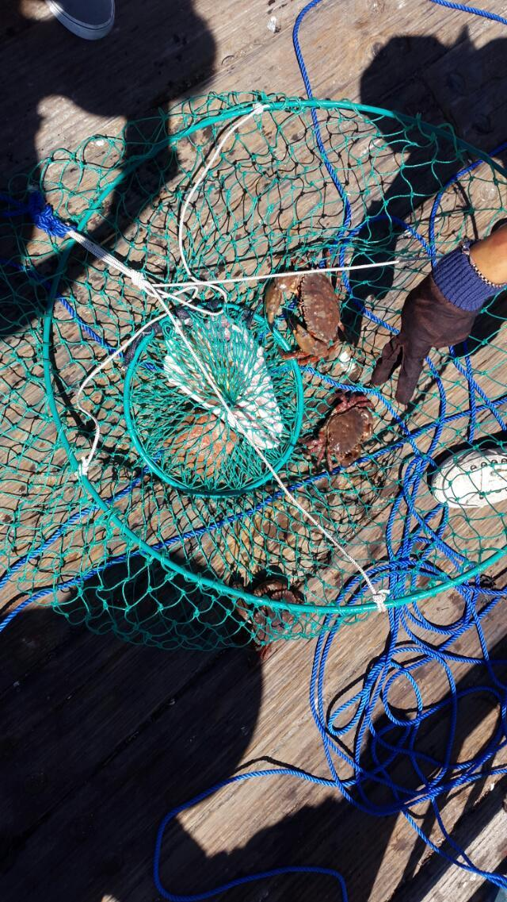
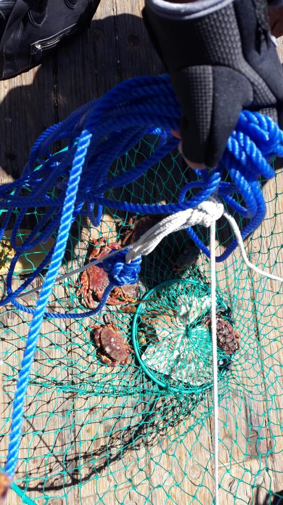
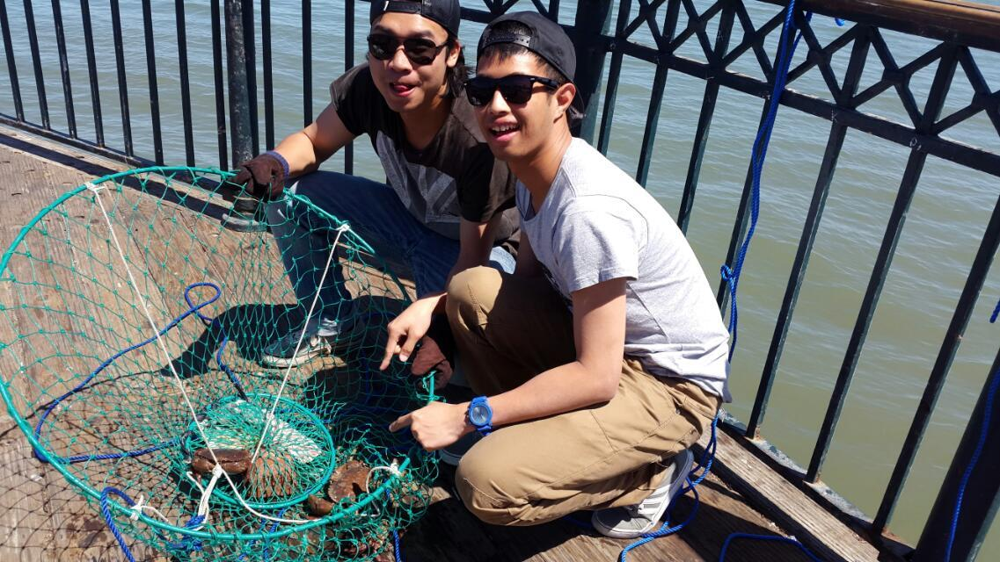
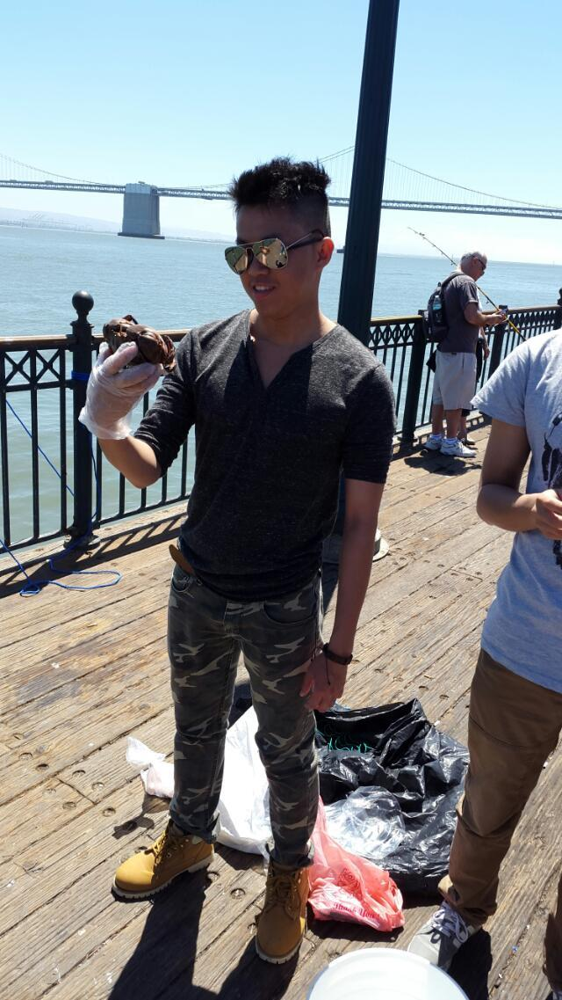
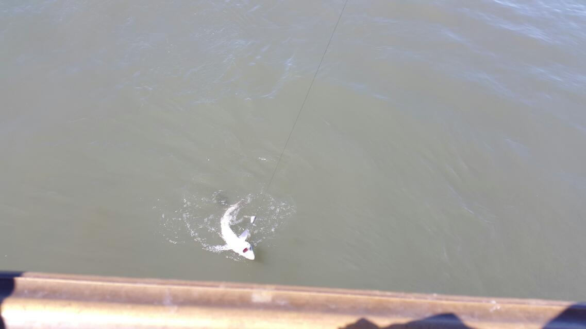

miscellaneousEducationI value education. Not every one has equal access to education. I didn't have the chance to attend college after high school due to financial reasons. I was once a worker at Mcdonalds before college. Fortunately, I met a lot of supportive people through out my life, but not every one is as fortunate as me. Currently, I memtor some first generation college students at my community college.
My Lovely Community College: City College of San FranciscoBasketball and NBAI enjoy playing basketball and watching NBA. My favorite NBA team is obviously my local team, Golden State Warriors, and my favorite NBA player is Klay Thompson, who demonstrates great athleticism and more importantly good sportsmanship. Unlike other great NBA stars, he is rarely involved in NBA fights or pretentious celebrations on made field goals. Here are some of my favorite NBA clips.
Fishing and CrabbingOther than basketball, I often go fishing and crabbing around the bay area. Here are some tips and regulations on fishing and crabbing.
Throwing the net Crab Harvest More Crab Harvest Crabbing with friends Me with a Rock Crab We caught a shark and released it afterwards. 
|